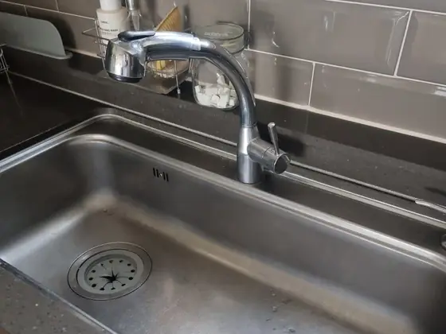
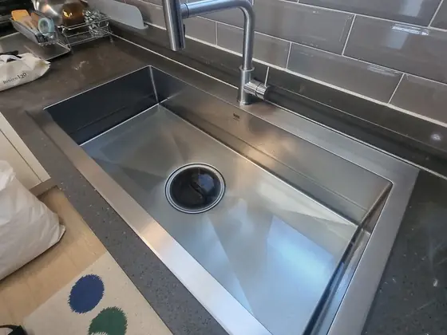

BEFOREAFTER용인 수지 사각 싱크볼·수전 교체
- 작업 전
- 현장에 설치되어 있던 싱크볼은 모서리가 둥근 형태의 기존 스테인리스 제품이었습니다. 싱크볼 내부에는 오랜 사용으로 잔스크래치와 사용 흔적이 있었고 수전 역시 기존 제품을 오랫동안 사용한 상태였습니다.
- 작업 내용
- 기존 싱크볼과 상판 상태 확인 → 기존 수전 및 싱크볼 철거 → 한샘 사각 싱크볼 설치 → 새로운 주방 수전 설치
- 작업 완료
- 이번 현장에서 가장 크게 달라진 것은 싱크대의 전체적인 분위기입니다. 기존에는 둥근 형태의 싱크볼과 오래된 수전을 사용하고 있었지만 교체 후에는 직선적인 디자인의 사각 싱크볼과 새로운 수전이 설치됐습니다.
- 마무리
- 기존 주방 구조를 유지하면서 필요한 부분만 교체했다는 점이 이번 작업의 특징이었습니다.